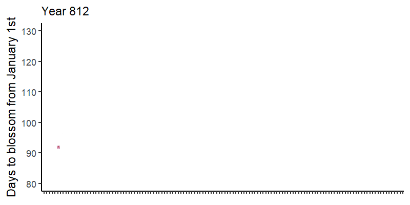
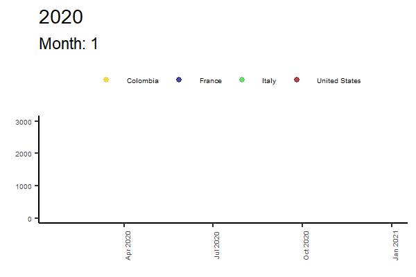
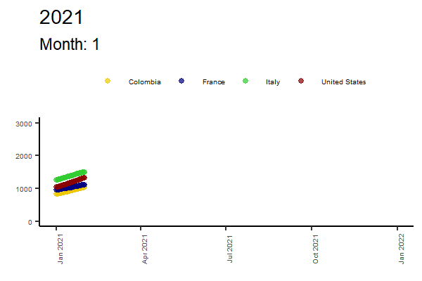
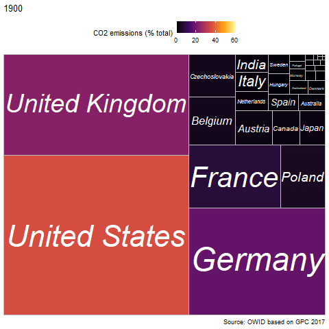
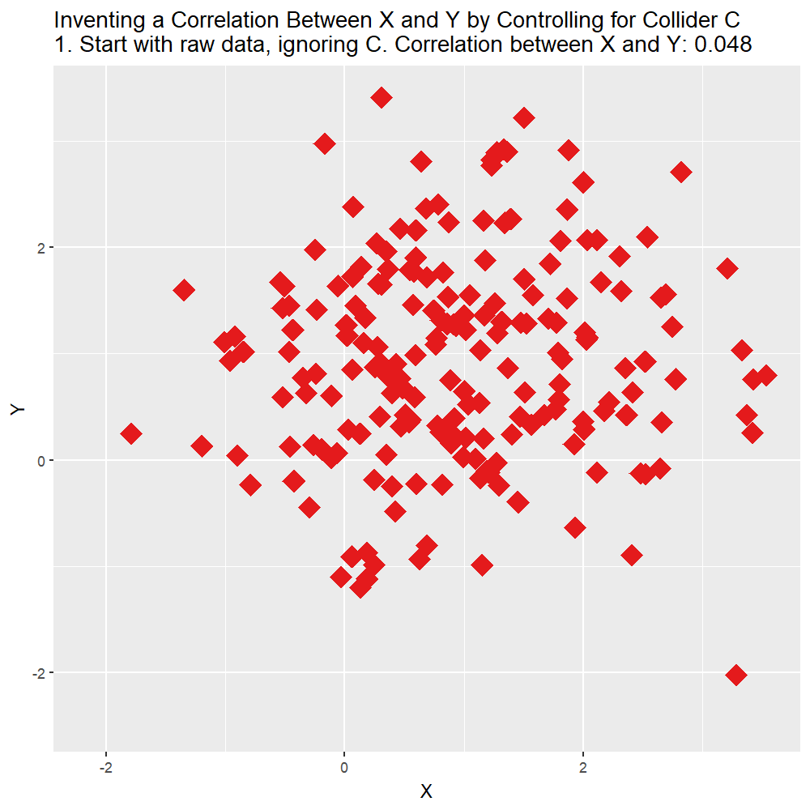

Transform static plots into animations using gganimate. Examples include millennia of cherry tree blossoms, COVID-19 aftermath and why causation does not imply correlation.
Author
Nelson Amaya
Published
July 31, 2022
Modified
October 6, 2026
“The greatest value of a picture is when it forces us to notice what we never expected to see” –John Tukey
Level: Intermediate · Time: ~75 min · Prerequisites: Everything in its right place · Tools: gganimate, ggplot2, ggimage, ggpp
You will learn to
Turn a static ggplot2 chart into an animation with gganimate.
Use geom_plot() to nest a focus plot inside a larger one.
Animate a time series (Kyoto cherry blossoms, COVID-19 deaths) to show change over time.
Recognise why an animated correlation is not evidence of causation.
PART I: Cherry tree blossoms
People in Kyoto have been keeping track of the day the cherry trees blossom since the year 812. You can find the data here.
Sakura
Let’s first plot it and add a smoothing LOESS curve. We’ll use ggimages to change the point to an image of a cherry blossom and ggpp to add a plot inside of another plot that focuses attention on one part, with the geom_plot() function. This way we can focus attention on a particular part of the graph.
Notice that during the XX century the cherries started to blossom way earlier than they did for over a millennium.
library(tidyverse)library(ggimage)library(ggpp)library(readxl)# First we upload the data and create a date variable ####1sakura_data <- readxl::read_excel(paste0(getwd(),"/KyotoFullFlower7.xlsx"), skip =25) |>2 tidyr::drop_na() |>3 dplyr::rename("year"=1,"blossom"=2) |>4 dplyr::mutate(year = lubridate::make_date(year))# Now we create a plot for only the XX century. ####5sakura_xx <-tibble(x=lubridate::as_date("1800-01-01"), y=60,# I save the plot as a listplot =list(sakura_data |> dplyr::filter(year>1900) |>ggplot(aes(x=year, y=blossom))+geom_point()+geom_smooth(method="lm", color="red")+ylim(c(85,110))+scale_x_date(date_breaks ="5 years", date_labels ="%Y")+labs(y=NULL, x=NULL)+theme_classic()+theme(axis.text.x =element_text(angle=90),text =element_text(size=7)) ) )# Now I create the plot ####sakura <- sakura_data |>6 dplyr::mutate(sakura =paste0(getwd(),"/sakura.jpg")) |>ggplot(aes(x=year, y=blossom))+7geom_plot(data = sakura_xx, aes(x,y,label=plot))+8annotate(geom="rect", xmin=lubridate::as_date("1900-01-01"), xmax=lubridate::as_date("2022-01-01"),ymin=82,ymax=110,linetype="dotted", fill="grey80", color="black")+annotate(geom="rect", xmin=lubridate::as_date("1300-01-01"), xmax=lubridate::as_date("1800-01-01"),ymin=60,ymax=90,linetype="dotted", fill=NULL, color="black")+9geom_image(aes(image=sakura), size=0.02)+10geom_smooth(method="loess", color="pink")+ylim(c(60,130))+scale_x_date(date_breaks ="50 years", date_labels ="%Y")+labs(y="Days to blossom from January 1st",x=NULL,caption ="Source: NOAA paleo phenology data and \nHistorical Series of Phenological data for Cherry Tree Flowering at Kyoto City\n by Aono and Kazui, 2008; Aono and Saito, 2010.")+theme_classic()+theme(axis.text.x =element_text(angle=90))sakura
1
Load the data from the Excel file; skip = 25 jumps over the metadata rows before the actual table starts
2
Drop years without a recorded blossom date
3
Rename the first two columns to year and blossom
4
Transform the year into a proper date using the make_date() function from the lubridate package
5
We first create a tibble with the coordinates where we want our inside plot to be, and a ggplot object saved as a list (all ggplot objects are lists!). We customise the plot, as always
6
To use ggimages we need to create a variable with the location of the image file in our directory. The image can vary per observation.
7
We use the geom_plot() geometry to embed a plot within a plot, using the label aesthetic to place the plot and data from the tibble we just created.
8
We create some annotations to box the plot within the other plot
9
We change the shape of the point for an image stored locally or in a URL using the geom_image() geometry and the image aesthetic.
Dates are notoriously annoying to handle, but the lubridate package makes it way easier.
Sakura animated
To introduce animation with gganimate package, let’s drop the inference from the smooth curve and add two lines of code to the ggplot: transition_time(), which will create one frame per year in the data, and shadow_mark(), which will keep old values once they are shown.
What do these functions mean? How do they work? How do you export the animations?
library(tidyverse)library(lubridate)library(ggimage)library(gganimate)sakura_anim <- sakura_data |>11 dplyr::mutate(sakura =paste0(getwd(), "/sakura.jpg")) |>12 dplyr::mutate(y=lubridate::year(year)) |>13ggplot(aes(x=year, y=blossom))+geom_image(aes(image=sakura), size=0.02)+ylim(c(80,130))+scale_x_date(date_breaks ="10 years", date_labels ="%Y")+labs(y="Days to blossom from January 1st",x=NULL,14subtitle ="Year {frame_time}")+theme_classic()+theme(axis.text.x =element_blank())+15 gganimate::transition_time(as.integer(y))+16 gganimate::shadow_mark()
11
We create a variable that indicates where the image we plan to use as a point is stored
12
Create a separate year variable for the animation using the year() function
13
We create our ggplot, as usual
14
We use the {frame_time} option within the brackets so the animation saves the year for each frame
15
We define the transition_time() as an integer of years, which will be our animation variable. as.integer() makes sure the dates don’t include decimals.
16
We add shadow_mark() so old points are displayed as well.
Hey, plots in the margins!

Cherry blossoms
TipAlways check the package vignettes!
Check out the gganimate references to learn what options best suit your project
PART II: COVID-19 & C02 emissions
Now let’s turn to another topics. First we’ll create an animation at what has happened over the past few years with the COVID-19 pandemic, then we’ll turn to pollution.
Now we’re going to paint a grim picture: The evolution of COVID-19 related deaths per million inhabitants, in each of our countries, in 2020 and 2021.
We will first create ggplot objects for each year using a simple loop and store them in a list. Then we’ll add a few simple gganimate parameters and voila, animation done. The key parameter is the one that defines the transition between different moments transition_time() where we add our time variable. The rest is just decoration to smooth the change between one state and the next one, showing each new state while keeping the old ones, and define how each state is introduced.
library(tidyverse)library(RColorBrewer)library(lubridate) # Useful for handling dateslibrary(gganimate) # Animate ggplot objects# Create empty lists ####covid_plot <-list()covid_animation <-list()# Loop ####for(i inc(2020:2021)) {# Step 1: Create plot for each year covid_plot[[paste0("year_",i)]] <- owid_covid %>%# Format date dplyr::mutate(date = lubridate::as_date(date),n =row_number(),year = lubridate::year(date)) |># Filter countries using the %in% operator dplyr::filter(iso_code %in%c("COL","ITA","FRA","USA"), year %in% i) |>ggplot(aes(x=date,y=total_deaths_per_million,color=location))+geom_point(alpha=0.7)+labs(title = i,# Notice the bracket term, which will show the frame rate for the animation we define belowsubtitle ="Month: {frame_time}",x=NULL,y=NULL)+scale_color_manual(values=c("gold2","navy","limegreen","red4"))+ylim(c(0,3000))+theme_classic()+guides(fill=guide_legend(ncol=1))+theme(legend.position ="top",legend.title =element_blank(),legend.text =element_text(size =5),axis.text.x =element_text(angle =90,size =5),axis.text.y =element_text(size =5) )# Step 2: Animate plot for each year covid_animation[[paste0("year_",i)]] <- covid_plot[[paste0("year_",i)]] +# Add the animation gganimate::transition_time(as.integer(lubridate::month(date)))+# Add shadow to show previous points gganimate::shadow_mark()+# Enter options for each new state/time gganimate::enter_fade()}

Figure 1: 2020

Figure 2: 2021
Even though Italy was the locus for the spread of the virus in Europe, the speed of deaths tapered off before the end of the first year of the pandemic. Same for France. In Colombia the deaths grew very quickly, exponentially, and ended up being higher than the two European countries.
CO2 emissions
We find the repository from the Our World in Data and import the data.
Now we use the package treemapify to build a treemap of the distribution of emissions through time using the geom_treemap() geometry. We place the the inferno option for the fill in the viridis package and done.
library(treemapify)library(tidyverse)library(janitor)library(gganimate)library(viridis)owid_co2 <- readr::read_csv("https://raw.githubusercontent.com/owid/owid-datasets/master/datasets/Annual%20share%20of%20CO2%20emissions%20(OWID%20based%20on%20GCP%2C%202017)/Annual%20share%20of%20CO2%20emissions%20(OWID%20based%20on%20GCP%2C%202017).csv") |> janitor::clean_names() |> dplyr::rename(co2=3)co2_anim <- owid_co2 |> dplyr::filter(year>1899) |>ggplot(aes(area = co2,fill=co2, label=entity)) + treemapify::geom_treemap()+ treemapify::geom_treemap_text(fontface ="italic", colour ="white", place ="centre",grow =TRUE)+scale_fill_viridis_c(option ="inferno", name ="CO2 emissions (% total)")+labs(title ="{closest_state}", caption ="Source: OWID based on GPC 2017")+theme(legend.position ="top")+ gganimate::transition_states(as.integer(year))+ease_aes("linear")

Figure 3: C02 Emissions in the XX century
Bonus track: Correlation, causation –and why data never speaks for itself
“While correlation does not imply causation, causation does imply correlation” wrote Daniel Kahneman in his latest book Noise. Mr Kahneman, I’m afraid you are wrong. By a mile. Let’s see why.
We only need to prove that a causal relationship might not reflect a correlation. This is surprisingly easy to do, conceptually and statistically. Let’s first see a simple simulation and then look at a nice example from Scott Cunningham’s Causal Inference: The Mixtape”.
The simple setup below shows two random variables \(X\) and \(Y\) that represent 10 000 independent tosses of a fair coin. Now let’s build another variable \(Z\) that takes the value of 1 when \(X\) and \(Y\) both land the same result, heads of tails. This means that \(Z\) is, by definition, causally dependent on both \(X\) and \(Y\), as when both variables are equal, \(Z\) is “turned on”.
X <-rbinom(seq(1:1e4),1,0.5)Y <-rbinom(seq(1:1e4),1,0.5)Z <-ifelse(X==Y,1,0)
Now what do you think is the correlation between \(X\) and \(Z\)? and what about the correlation between \(Y\) and \(Z\)? Let’s calculate them both:
correlations
values
Between X and Y
-0.002607624
Between X and Z
-0.003805220
Between Y and Z
-0.002009901
No, causation does not imply correlation
How the hell are these correlations bordering 0 if these variables are actually causally determined? Aren’t these correlations supposed to be high, close to 1 or -1? What is going on?
Run the code again. Make the samples bigger. This is not a fluke.
Well, it turns out that this is a case of a collider, and one of the many reasons why you cannot ignore causal inference theory.
‘You like DAGs?’ - Mickey, Snatch (2000)
Animate to understand: Causal inference
The tool for thinking about these traps is the DAG –a directed acyclic graph where arrows mean “causes”. Our coin-toss example looks like this: two arrows pointing into Z make it a collider, and conditioning on a collider opens a spurious path between its parents. Drawing the graph takes four lines with ggdag:
library(dagitty)library(ggdag)dagify( W ~ Y, W ~ Z,coords =list(x =c(Y =2, Z =1, W =1.5),y =c(Y =1, Z =1, W =2))) |>ggplot(aes(x = x, y = y, xend = xend, yend = yend)) +geom_dag_edges() +geom_dag_point(color ="grey80", size =10) +geom_dag_text() +theme_void()
# Calculate correlations ####collider_before_cor <-paste("1. Start with raw data, ignoring C. Correlation between X and Y: ",round(cor(collider_data$X,collider_data$Y),3),sep='')collider_after_cor <-paste("7. Analyze what's left! Correlation between X and Y controlling for C: ",round(cor(collider_data$X-collider_data$mean_X,collider_data$Y-collider_data$mean_Y),3),sep='')# Add animation steps: 2 (demean X), 3 (demean X and Y) and 4 (label)collider_full <- dplyr::bind_rows(#Step 1: Raw data only collider_data %>% dplyr::mutate(mean_X=NA,mean_Y=NA,C=0,time=collider_before_cor),#Step 2: Raw data only collider_data %>% dplyr::mutate(mean_X=NA,mean_Y=NA,time='2. Separate data by the values of C.'),#Step 3: Add x-lines collider_data %>% dplyr::mutate(mean_Y=NA,time='3. Figure out what differences in X are explained by C'),#Step 4: X de-meaned collider_data %>% dplyr::mutate(X = X - mean_X,mean_X=0,mean_Y=NA,time="4. Remove differences in X explained by C"),#Step 5: Remove X lines, add Y collider_data %>% dplyr::mutate(X = X - mean_X,mean_X=NA,time="5. Figure out what differences in Y are explained by C"),#Step 6: Y de-meaned collider_data %>% dplyr::mutate(X = X - mean_X,Y = Y - mean_Y,mean_X=NA,mean_Y=0,time="6. Remove differences in Y explained by C"),#Step 7: Raw demeaned data only collider_data %>% dplyr::mutate(X = X - mean_X,Y = Y - mean_Y,mean_X=NA,mean_Y=NA,time=collider_after_cor)) |> dplyr::mutate(C =factor(C))collider_anim <- collider_full |>ggplot(aes(y=Y,x=X,color=C))+geom_point(aes(shape=C), size=6)+geom_vline(aes(xintercept=mean_X))+geom_hline(aes(yintercept=mean_Y))+guides(color=guide_legend(title="C"))+scale_color_brewer(palette="Set1")+scale_shape_manual(values =c(18,19))+labs(title ='Inventing a Correlation Between X and Y by Controlling for Collider C \n{next_state}')+theme(legend.position ="none")+ gganimate::transition_states(time,transition_length=c(1,12,32,12,32,12,12),state_length=c(500,500,500,500,500,500,500),wrap=FALSE)+ gganimate::ease_aes('sine-in-out')+ gganimate::exit_fade()+ gganimate::enter_fade()

Figure 4: Collider bias, or how a spurious correlations is born
The Mixtape example: beauty, talent, and the movies
Scott Cunningham’s Causal Inference: The Mixtape opens the collider chapter with a beautiful puzzle: among movie stars, beauty and talent seem negatively correlated –the gorgeous ones can’t act, the brilliant ones look ordinary. Sinister? No: selection. Suppose beauty and talent are independent in the population, but you only become a star if the sum of the two is high enough. Looking only at stars is conditioning on a collider (stardom is caused by both), and it manufactures a negative correlation out of thin air.
You don’t have to take my word for it –run the selection yourself below.
Touch it: three graphs, one toggle
Each tab simulates 300 observations from a different causal structure. Every tab has one switch. Before you flip it, look at the DAG and decide what should happen. Then flip.
The simulations behind the toggles (click to read)
library(tidyverse)set.seed(4)n <-300# 1. Confounder: wealth causes both chocolate and Nobels. No arrow X -> Y.wealth <-rbinom(n, 1, 0.5)chocolate <-rnorm(n) +2.5* wealthnobels <-rnorm(n) +2.5* wealthconf <-tibble(x = chocolate, y = nobels, group =ifelse(wealth ==1, "Rich", "Poor"),1x_adj =resid(lm(chocolate ~ wealth)),y_adj =resid(lm(nobels ~ wealth)))# 2. Mediator: education raises skill, skill raises wages. Effect is REAL.education <-rnorm(n)skill <- education +rnorm(n) /2wages <-1.5* skill +rnorm(n) /2med <-tibble(x = education, y = wages, group =ifelse(skill >median(skill), "High skill", "Low skill"),x_adj =resid(lm(education ~ skill)),y_adj =resid(lm(wages ~ skill)))# 3. Collider: beauty and talent are independent; stardom needs their sum.beauty <-rnorm(n)talent <-rnorm(n)star <- (beauty + talent +rnorm(n) /4) >1.2coll <-tibble(x = beauty, y = talent, group =ifelse(star, "Movie star", "The rest of us"))2ojs_define(conf_r = conf, med_r = med, coll_r = coll)
1
“Adjusting” here is done the honest way, by residualizing: we keep only the part of each variable that the third variable does not explain. This is exactly what the step-by-step demeaning animation above does, and exactly what multiple regression does for you silently.
2
ojs_define() hands R objects to Observable JS, Quarto’s built-in language for interactive graphics –this is what makes the toggles below react instantly, with no server behind this page.
Wealthy countries eat more chocolate and win more Nobel prizes –there is no arrow between chocolate and Nobels. Adjusting for wealth is the right move here: it should make the slope vanish.
viewof adj_conf = Inputs.toggle({label:"Adjust for wealth (Z)"})conf_data =transpose(conf_r).map(d => ({x: adj_conf ? d.x_adj: d.x,y: adj_conf ? d.y_adj: d.y,group: d.group}))md`DAG: **Chocolate ← Wealth → Nobels**. Slope of the orange line: **${fitSlope(conf_data).toFixed(2)}** ${adj_conf ?"— adjusted: the illusion is gone.":"— unadjusted: chocolate 'causes' Nobel prizes?"}`
Education raises skill, and skill raises wages –the effect of education is real, and it flows through skill. Adjusting for the mediator is the wrong move if you want the total effect: it destroys the very thing you are measuring.
viewof adj_med = Inputs.toggle({label:"Adjust for skill (M)"})med_data =transpose(med_r).map(d => ({x: adj_med ? d.x_adj: d.x,y: adj_med ? d.y_adj: d.y,group: d.group}))md`DAG: **Education → Skill → Wages**. Slope of the orange line: **${fitSlope(med_data).toFixed(2)}** ${adj_med ?"— adjusted: you just erased a real effect.":"— unadjusted: the true total effect."}`
Beauty and talent are independent –but only people with plenty of at least one become movie stars. Restricting to stars is adjusting for a collider: it should invent a negative slope that exists nowhere in the population.
viewof only_stars = Inputs.toggle({label:"Look only at movie stars (condition on C)"})coll_data =transpose(coll_r).filter(d => only_stars ? d.group==="Movie star":true)md`DAG: **Beauty → Stardom ← Talent**. Slope of the orange line: **${fitSlope(coll_data).toFixed(2)}** ${only_stars ?"— among stars only: a correlation born from selection.":"— everyone: no relationship, as designed."}`
The moral fits in one sentence, and it is the most important sentence in this workshop: whether you should adjust for a variable depends on the causal structure, not on the data –the data looked identical across two of those tabs until you flipped the switch, and the right answer was “adjust” in one and “don’t you dare” in the other.
TipGo deeper
The DAG Almanac by Andrew Heiss –interactive confounders, mediators and colliders, with the do-calculus behind them (and it’s built with Quarto, like this site).
Understanding adjustment by Kristoffer Magnusson –the most beautiful interactive explanation of what “controlling for” really does.
Play more: this repo ships two little Shiny simulators, live below –or run them yourself with shiny::runApp("shiny/collider") / shiny::runApp("shiny/r4dev-ovb").
🏗 Practice 5: Make it move
An animation is just many static plots played in order. The browser can’t render gifs (gganimate’s renderer needs your own machine), but it can build the frames – which is where every animation starts.
NoteBasic
The classic Rosling chart: life expectancy against GDP per capita, one panel per year. Fill in the faceting call that turns one crowded plot into animation frames.
NoteHint
You met this function in the plots session – it splits one plot into small multiples by a variable. Split by the variable an animation would move through: time.
TipSolution
library(ggplot2)library(gapminder)gapminder |>ggplot(aes(x = gdpPercap, y = lifeExp, size = pop, color = continent)) +geom_point(alpha =0.6, show.legend =FALSE) +scale_x_log10() +facet_wrap(~year)
Each facet is one frame – transition_time(year) in gganimate does exactly this, then plays the panels in sequence.
ImportantIntermediate
Build one frame of a transition_reveal()-style animation by hand: Colombia’s life expectancy line drawn only up to a chosen year, with a point marking the front. Fill in the two blanks, then change frame_year and re-run – congratulations, you are the renderer.
NoteHint
Both blanks are the same thing: the frame you’re rendering. The line shows everything up to it; the point sits exactly at it.
TipSolution
frame_year <-1987gapminder |>filter(country =="Colombia", year <= frame_year) |>ggplot(aes(x = year, y = lifeExp)) +geom_line() +geom_point(data = \(d) filter(d, year == frame_year), size =3) +xlim(1952, 2007) +ylim(45, 80)
Re-run with several values of frame_year – the sequence of plots you just made is precisely what transition_reveal(year) automates.
CautionAdvanced
Rendering real animations needs gganimate and your own R session:
Make an animation of any data we’ve used so far, save it as a .gif and share it with the group.
In the three-toggle explainer above, the mediator tab erases a real effect when you adjust. Simulate a fourth structure –a chain with a confounder on top (Z → X, Z → Y, X → M → Y)– and decide: which variables do you adjust for to recover the true effect of X on Y? Verify with lm()
Key takeaways
gganimate adds motion to a ggplot2 chart through the same grammar-of-graphics layers you already know, plus a transition_*() call.
Animating a time series makes long-run change visible in a way a single static plot can’t.
Adjusting for the wrong variable in a causal graph can erase a real effect or fabricate a fake one – animation makes that concrete, not just algebraic.
What a chart shows moving together is not, by itself, evidence that one causes the other.